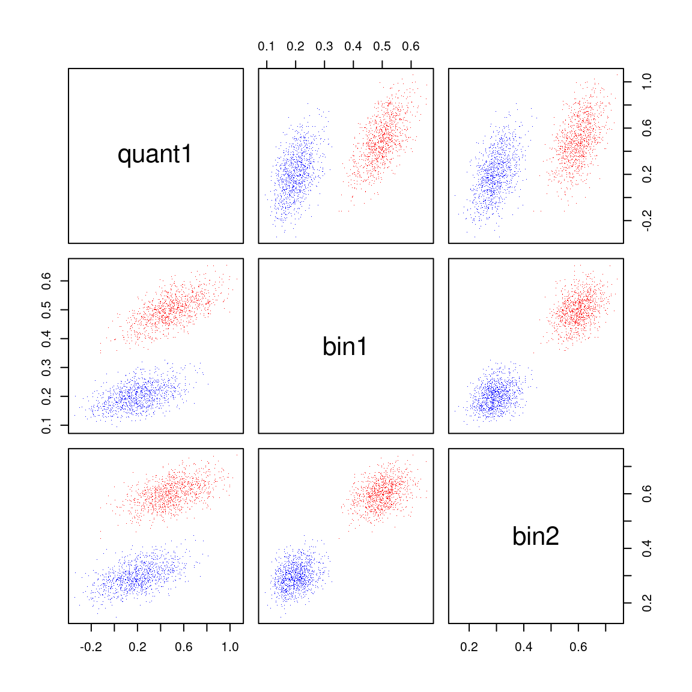

Gettings Started with Bayesian Marginal Reconstruction
Nathan Morris
2020-07-14
Source:vignettes/tboot_bmr.Rmd
tboot_bmr.RmdBayesian Marginal Reconstruction
Suppose we are able summarize the current state of scientific knowledge for the mean/proportion of each of several endpoints for a particular treatment using a distribution. The distribution for each endpoint may come from the elicitation of prior information from experts, some initial dataset or some combination of different sources of information. In many cases it will be difficult to arrive at a joint distribution. Only the marginal distribution of each endpoint will be calculated easily. This is particularly true when using external published data where only marginal effects are known, and no patient level data is available. In general assuming independence for the distribution of the mean for each endpoint is not appropriate, as we would expect correlations in the distribution given that many endpoints are correlated. The method described here may be used to simulate from the approximate joint distribution given the marginal distribution and an individual level data set. The correlation structure within the individual level data is used to impute the joint distribution. The method also provides a way to simulate virtual trial data based on the marginal.
A simulated example dataset
As and example, we simulate the following simple dataset with a continuous and two binary variables.
library(tboot)
set.seed(2020)
quant1 <- rnorm(200) + 1
bin1 <- ifelse( (.5*quant1 + .5*rnorm(200)) > .5, 1, 0)
bin2 <- ifelse( (.5*quant1 + .5*rnorm(200)) > .5, 1, 0)
simData <- data.frame(quant1, bin1, bin2)
head(simData)## quant1 bin1 bin2
## 1 1.37697212 0 0
## 2 1.30154837 1 1
## 3 -0.09802317 0 0
## 4 -0.13040590 0 0
## 5 -1.79653432 0 0
## 6 1.72057350 0 1Example
First, we create a list with simulations from the marginal distribution of each variable for two different treatments (active treatment and placebo).
marginal_active <- list(quant1=rnorm(5000, mean=.5, sd=.2),
bin1=rbeta(5000, shape1 = 50,shape2=50),
bin2=rbeta(5000, shape1 = 60,shape2=40))
marginal_pbo <- list(quant1=rnorm(5000, mean=.2, sd=.2),
bin1=rbeta(5000, shape1 = 20,shape2=80),
bin2=rbeta(5000, shape1 = 30,shape2=70))We next need to use ‘tweights_bmr’ to calculate the correlation matrix from the data and get set for marginal reconstruction. The calculation uses a call to the ‘tweights’ function.
## ----------------------------------------------------------------
## Optimization was successful. The weights have a sampleing
## distribution with means close to the attemted target:
## quant1 bin1 bin2
## Achieved Mean 0.4968368 0.4992157 0.600457
## Target Mean 0.4968368 0.4992157 0.600457
## Maximum weight was: 0.04623098
## Data augmented with 1 sample(s) with independent variables.
## The final weight of the indpendent sample(s) was: 0.007398153
## ----------------------------------------------------------------## ----------------------------------------------------------------
## Optimization was successful. The weights have a sampleing
## distribution with means close to the attemted target:
## quant1 bin1 bin2
## Achieved Mean 0.1969663 0.2003352 0.2997904
## Target Mean 0.1969663 0.2003352 0.2997904
## Maximum weight was: 0.02418729
## Data augmented with 1 sample(s) with independent variables.
## The final weight of the indpendent sample(s) was: 0.006562899
## ----------------------------------------------------------------To simulate from the posterior we use ‘post_bmr’:
samples <- rbind(data.frame(trt="active", post_bmr(nsims=1e3, bmr_active)),
data.frame(trt="pbo", post_bmr(nsims=1e3, bmr_pbo)))
head(samples)## trt quant1 bin1 bin2
## 1 active 0.4909751 0.4588719 0.5872279
## 2 active 0.1522832 0.3929919 0.4903635
## 3 active 0.3521943 0.4217331 0.5940661
## 4 active 0.1911470 0.4232380 0.5223984
## 5 active 0.4904320 0.5739046 0.5425915
## 6 active 0.6137868 0.5463136 0.6449981The posterior samples show a correlations structure.

Marginally the posterior samples are equivalent to the simulations used as input (i.e., in the ‘marginal’ parameter).
library(ggplot2)
pltdta=do.call(rbind, lapply(c("quant1","bin1", "bin2"),
function(nm) {
rbind(data.frame(type="BMR", var=nm, trt=samples$trt,
val=samples[[nm]]),
data.frame(type="marginal", var=nm,
trt="active",
val=marginal_active[[nm]]),
data.frame(type="marginal", var=nm,
trt="pbo",
val=marginal_pbo[[nm]]))
}))
ggplot(pltdta, aes(fill=type, x=val)) +
geom_density(alpha=.3) + facet_grid(var~trt, scales = "free")
To simulate a random trial dataset using the parameters from a single draw of ‘post_bmr’ we use the tboot_bmr function. For example to simulate 100 patients on active treatment:
## quant1 bin1 bin2
## 1 0.3944395 1 1
## 2 -0.4321196 0 0
## 3 -2.0566837 0 0
## 4 -1.2648538 0 0
## 5 -0.1767540 0 0
## 6 -2.0566837 0 0The underlying parameter mean for the simulation is an attribute:
## quant1 bin1 bin2
## 0.5927736 0.4617252 0.5994379A more interesting example would be to simulate and analyze trial data. For example:
#Manage any errors by assuming the pvalue failed to reach statistical
#significance (i.e. pvalue is 1) but keep track of such errors.
errorTrackGlobal=list()
manageError=function(expr) {
tryCatch(eval(quote(expr)), error=function(e){
errorTrackGlobal[[length(errorTrackGlobal)+1]] <<- e$message
return(1)
})
}
#create function to simulate and analyze one virtual trial
sim_and_analyze=function() {
active_sample=tboot_bmr(100, bmr_active)
pbo_sample=tboot_bmr(100, bmr_pbo)
data.frame(
p_quant1=manageError(t.test(active_sample$quant1,pbo_sample$quant1)$p.value),
p_bin1=manageError(fisher.test(active_sample$bin1,pbo_sample$bin1)$p.value),
p_bin2=manageError(fisher.test(active_sample$bin2,pbo_sample$bin2)$p.value)
)
}
#Simulate Pvalues
p_sim=do.call(rbind, replicate(100, sim_and_analyze(), simplify = FALSE))
head(errorTrackGlobal)## list()## p_quant1 p_bin1 p_bin2
## 1 8.361678e-03 1.00000000 1.00000000
## 2 8.493083e-07 1.00000000 1.00000000
## 3 2.170874e-02 0.55474538 1.00000000
## 4 9.924969e-03 0.59836673 0.40612432
## 5 2.154656e-03 0.09505923 0.03519902
## 6 4.807536e-01 0.61658432 0.82775616The pvalue matrix above may be analyzed, for example, using the gMCP package if multiple testing adjustments are needed.
Methods
The algorythm
To describe the algorythm, we use the following notation:
- \(k \in [1,2,...K]\) is the endpoint endex for \(K\) endpoints.
- \(y_{k}\) is a vector of length \(J_k\) of simulations of the marginal distribution of the mean of \(k^{th}\) endpoint.
- \(X\) is a matrix of input data with columns for each endpoint. \(X_{.k}\) is the vector of data for the \(k^{th}\) endpoint.
- \(\hat{y}_k\) is the mean of \(y_{k}\).
- \(Q(y_{k}, p)\) is the \(p^{th}\) quantile of vector \(y_{k}\).
The algorithm for ‘tweights_bmr()’ takes \(y_{k}\) and \(X\) as input and proceeds as follows:
- Calculate \(\hat{y}_k\)
- Use tboot to calculate the weights (\(w\)) which would tilt \(X\) such that the mean of \(w\cdot X_{.k} = \hat{y}_k\) for all endpoints \(k\).
- Calculate the implied weighted correlation (\(\hat{C}\)) from using weights \(w\) for \(X\).
The algorithm for ‘post_bmr()’ takes the output from ‘tweights_bmr()’ and proceeds as follows:
- Simulate \(Z \sim MultivariateNomal(mean=0, variance=\hat{C})\)
- Simulate the posterior mean as \(y_k^* = Q(y_{k}, \Phi(Z_k))\)
- Repeat steps 1 and 2 to generate more samples.
The algorithm for ‘tboot_bmr()’ takes the output from ‘tweights_bmr()’ and proceeds as follows:
- Simulate the posterior mean \(\mu\) as in the algorithm above.
- Use tweights and tboot to simulate data with a mean of \(\mu\). The option ‘Nindependent’ is always non-zero to help avoid errors. See the vignette on ‘tweights’ for more information on this option.
Justifying the algorithm
The algorithm described above may be justified in several ways. First, it is heuristically plausible. One would expect at first thought that when two variables are correlated, a drug which influences one of the variables will most likely influce the other. Second, in some specific cases, the algorythm may be justified via Bayesian Assymptotics using the ‘Berstein Von-Misus’ theorem. This document will not attempt to fully work out this more theoretical approach.
Considering the limits of ‘tboot_bmr’
The following considerations should be relevent when considering the use of ‘tboot_bmr:’
- Is the relationship between variables found in the available individual level data generalizable to the treatment of interest? That is if the individual data is tilted to reflect the expected mean of the treatment of interest, will the correlation be realisticly similar to the correlation of variable in the treatment of interest. In general, it is expected that the assumptions of ‘tboot’ will be more believable than the assumption of independence.
- Is the individual level data sample size large enough to make inference about correlation?
- Did the information about each variable come from different trials? In such cases it may be argued that for large samples sizes the distribution should be independent.